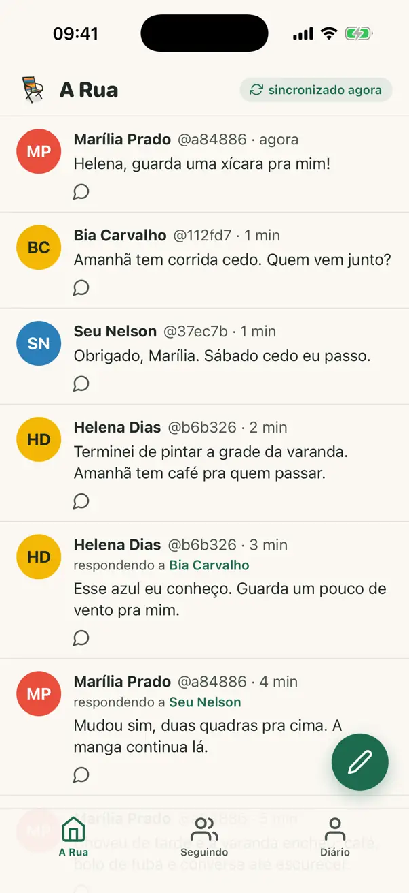
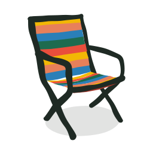
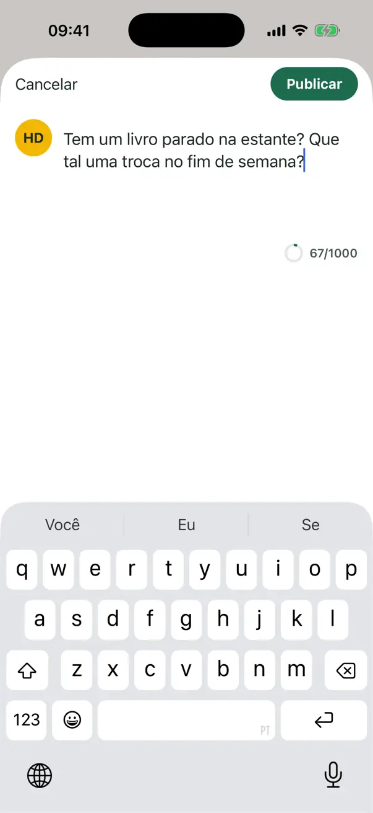
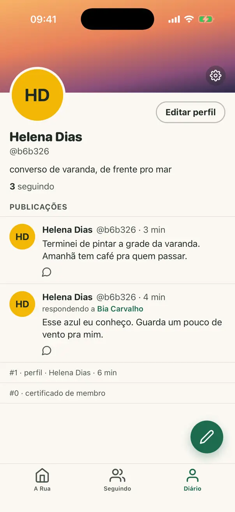

Protótipo aberto · Piloto em breve
A conversa merece uma varanda.
Uma rede social brasileira em construção: cada pessoa guarda as próprias publicações no próprio aparelho, e quem segue guarda uma cópia.


O app por dentro
Três telas do app, capturadas no simulador do iPhone, com conteúdo fictício: o que já funciona hoje no protótipo.
-
A Rua
O feed: os diários que você segue, do mais novo ao mais antigo.
-

Publicar
Até 1000 caracteres, assinado no seu aparelho.
-

Diário
As suas publicações e o seu perfil.
Capturas do app no simulador do iPhone, com conteúdo fictício. O visual pode mudar até o piloto.
Como funciona hoje
-
Seu diário fica no seu aparelho
Cada publicação é assinada no seu aparelho. A sua identidade é a chave pública do seu diário.
-
Seguir é guardar uma cópia
Quem segue você guarda uma cópia do seu diário e repassa adiante, como num torrent.
-
Semeadores certificados
Um semeador só guarda diários que têm certificado de membro da associação.
Testado entre o terminal, o navegador e o simulador do iPhone.
Nomes de casa
No app, cada canto tem nome brasileiro.
-
A Rua já existe
O feed.
-
Cadeiras de Praia planejado
Conversas em grupo e salas de áudio.
-
Espiadinha planejado
Espiar outras cidades e outros pontos de vista.
-
Gente da Gente planejado
O selo de quem é real e constrói.
Feito às claras
- É um protótipo de fase 0.
- O código é aberto, com licença MIT.
- Ainda não está nas lojas de aplicativos.
- A verificação de idade ainda é de teste.
- A LGPD e a verificação de idade estão no desenho, em discussão.
Sua visita a este site
Este site não tem formulários, cookies nem rastreadores. A hospedagem (GitHub Pages) registra o endereço IP de cada visita, por segurança.